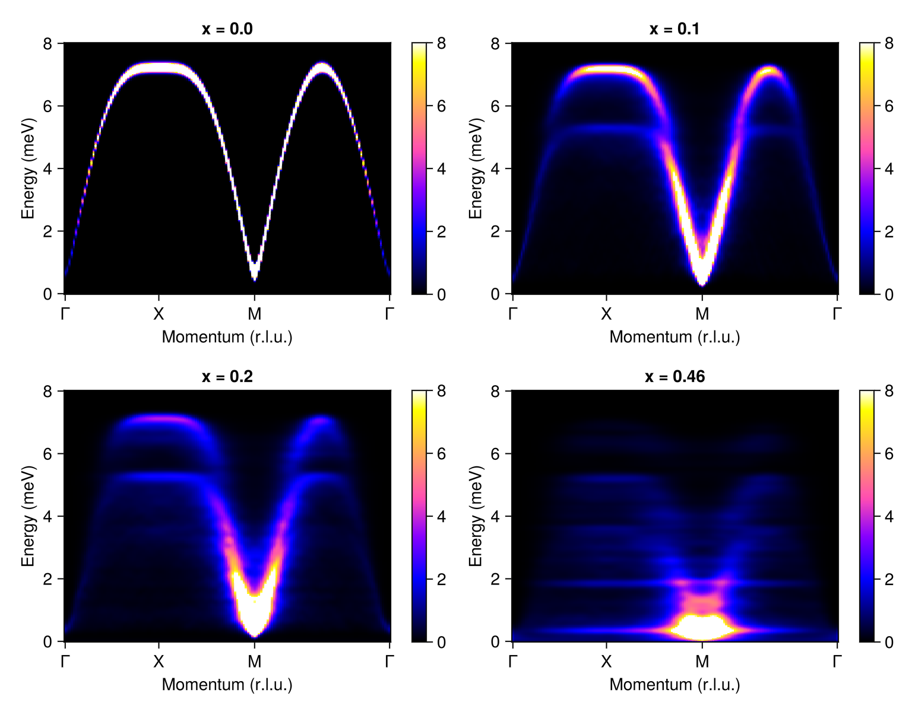
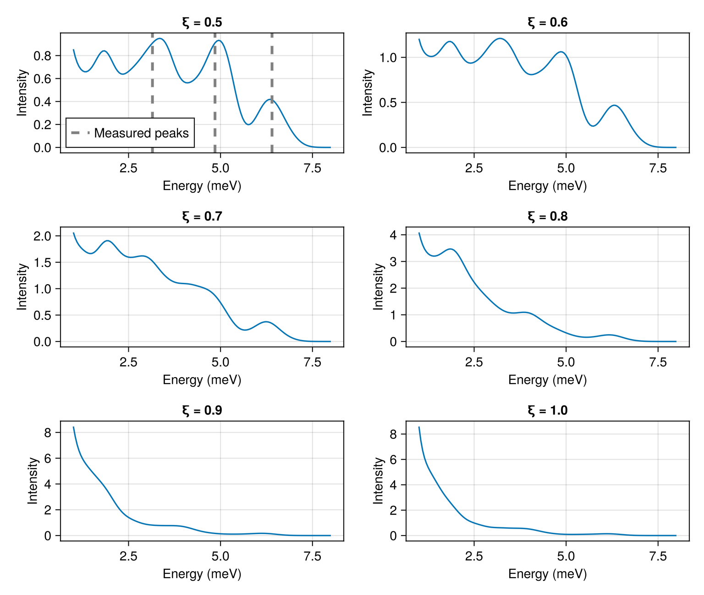

Download this example as Julia file or Jupyter notebook.
9. Spin waves in disordered magnets
This example uses to_inhomogeneous and SpinWaveTheoryLarge to calculate the spectrum of Rb₂Mn₁₋ₓMgₓF₄, a disordered quasi-2D antiferromagnet. The doping fraction $x$ introduces random magnetic vacancies. Inelastic neutron measurements were reported in Cowley et al., Phys. Rev. B 15, 4292 (1977). Sunny models this data using spin wave calculations on very large supercells.
using Sunny, GLMakieModel a single Mn layer using the lattice constants of the diluted crystal. Following Cowley et al., the model retains just the effective nearest-neighbor exchange $J = 0.72$ meV. A weak easy-axis anisotropy orients the spins along the $c$ axis, and reproduces the zone-center gap of pure Rb₂MnF₄.
units = Units(:meV, :angstrom)
latvecs = lattice_vectors(4.1457, 4.1457, 13.801, 90, 90, 90)
cryst = Crystal(latvecs, [[0, 0, 0]])
sys = System(cryst, [1 => Moment(s=5/2, g=2)], :dipole; dims=(2, 2, 1), seed=0)
J = 0.72
set_exchange!(sys, J, Bond(1, 1, [1, 0, 0]))
set_onsite_coupling!(sys, S -> -0.008*S[3]^2, 1)
randomize_spins!(sys)
minimize_energy!(sys)Converged in 153 iterationsA helper function that builds an 80×80 supercell, converts it to_inhomogeneous, and calls set_vacancy_at! for a fraction $x$ of random sites. These vacancies model substitution of the non-magnetic ion Mg. A more complicated model could also modify the local couplings via set_exchange_at!, set_onsite_coupling_at!, and related functions.
function diluted_system(sys, x)
sys_inhom = to_inhomogeneous(resize_supercell(sys, (80, 80, 1)))
for site in eachsite(sys_inhom)
if rand(sys_inhom.rng) < x
set_vacancy_at!(sys_inhom, site)
end
end
minimize_energy!(sys_inhom)
return sys_inhom
enddiluted_system (generic function with 1 method)Calculate $S(𝐪, ω)$ at various dilutions $x$. SpinWaveTheoryLarge is designed for large supercells such as this one. It uses the Lanczos method instead of direct matrix diagonalization to reduce computational cost to linear scaling in system size.
Undiluted, there is a single sharp magnon. With dilution, the long-wavelength magnon near the ordering wavevector M stays relatively coherent, while modes near the zone boundary become strongly damped. Simultaneously, flat $𝐪$-independent bands appear. These are localized excitations of spins with different numbers of magnetic neighbors. Near and beyond percolation ($x_c ≈ 0.407$), the low-energy weight is dominated by finite clusters.
qs = [[0, 0, 0], [1/2, 0, 0], [1/2, 1/2, 0], [0, 0, 0]]
path = q_space_path(cryst, qs, 150; labels=["Γ", "X", "M", "Γ"])
energies = range(0, 8, 200)
kernel = gaussian(fwhm=0.2)
fig = Figure(size=(768, 600))
for (i, x) in enumerate([0.0, 0.1, 0.2, 0.46])
sys_inhom = diluted_system(sys, x)
swt = SpinWaveTheoryLarge(sys_inhom; measure=ssf_perp(sys_inhom))
res = intensities(swt, path; energies, kernel, threaded=true)
plot_intensities!(fig[fldmod1(i, 2)...], res; units, colorrange=(0, 8), title="x = $x")
end
fig
Fig. 5 of Cowley et al. reports neutron intensity at dilution $x = 0.46$ and temperature 4.0 K. Their RLU notation uses a √2×√2 magnetic cell whereby $(ξ, 0, l)$ maps to Sunny's $(ξ/2, ξ/2, l)$. At the magnetic zone boundary $ξ = 1/2$ the calculated peaks (3.3, 4.9, and 6.3 meV) agree reasonably with the experimental values (vertical dashed lines at 3.15, 4.85, and 6.40 meV). These peaks represent Mn²⁺ ions with 2, 3, and 4 magnetic neighbors. Toward the magnetic zone center $ξ = 1$ the fine structure fades, and the intensity grows and moves to lower energies.
sys_inhom = diluted_system(sys, 0.46)
formfactors = [1 => FormFactor("Mn2")]
swt = SpinWaveTheoryLarge(sys_inhom; measure=ssf_perp(sys_inhom; formfactors))
ξs = [0.5, 0.6, 0.7, 0.8, 0.9, 1.0]
energies = range(1, 8, 141)
kernel = gaussian(fwhm=0.6)
res = intensities(swt, [[ξ/2, ξ/2, 2.9] for ξ in ξs]; energies, kernel, kT=4.0*units.K, threaded=true)
fig = Figure(size=(768, 650))
for (i, ξ) in enumerate(ξs)
ax = Axis(fig[fldmod1(i, 2)...]; xlabel="Energy (meV)", ylabel="Intensity", title="ξ = $ξ")
lines!(ax, energies, res.data[:, i])
ξ == 0.5 && vlines!(ax, [3.15, 4.85, 6.40]; color=:gray, linestyle=:dash, linewidth=3, label="Measured peaks")
ξ == 0.5 && axislegend(ax; position=:lb)
end
fig